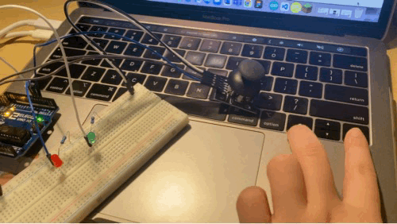
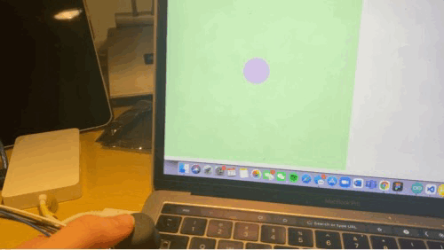

Arissa's Assignment 6!
Here's my keypad (arrow) controlled LEDs 
And here's my joystick controlled p5 output 
My circuit for Assignment 6 uses a joystick to change the p5 page, and the arrow keys as input to turn on/off LEDs on with the arduino.

I used two LEDs, red and green, and for each used a 220 ohm resistor, calculated using Ohm's law V = I * R. Because green and red LEDs have voltage drops of 1.8V, 3.2V/0.02A = 160 ohms, so I used the closest standard resistor of 220 ohms.

JSON parsing is used to get coordinates from the joystick's serial input sent to p5, and controlling where on the screen an ellipse is. analogRead() takes input from x and y of the joystick (since joysticks are essentially two potentiometers). The numbers read reflect the position of the joystick. The two LEDs on the arduino are controlled by the right and left arrows of the laptop keypad in p5. By pressing the left arrow, the red LED turns on or off, while the right arrow turns the green LED on or off. Below is my arduino code, which uses some class code from the joystick in class activity.
// Uses example code from class with joystick
// Set variables
int x = A0; // input pin for X value on joystick
int y = A1; // input pin for Y value on joystick
int red = 5; // output pin for red LED
int green = 6; // output pin for green LED
int redState = 0; // tracks on/off state for red LED
int greenState = 0; // tracks on/off state for green LED
void setup() {
// initialize serial communication at 9600 bits per second
Serial.begin(9600);
pinMode(red, OUTPUT); // set red LED as output
pinMode(green, OUTPUT); // set green LED as output
}
void loop() {
int s1 = analogRead(x); // reads input from joystick for x coordinate
int s2 = analogRead(y); // reads input from joystick for y coordinate
// create array with coordinates to p5
Serial.print("[");
Serial.print(s1);
Serial.print(",");
Serial.print(s2);
Serial.println("]");
if (Serial.available() > 0) { // check if there's serial data
int inByte = Serial.read(); // read the serial data
if (inByte == 'g') { // if for green LED
if (greenState == HIGH) { // if LED is currently on
digitalWrite(green, LOW); // turn green LED off
greenState = LOW;
} else {
digitalWrite(green, HIGH); // otherwise, turn on green LED
greenState = HIGH;
}
} else if (inByte = 'r') { // if for red LED
if (redState == HIGH) { // if LED is currently on
digitalWrite(red, LOW); // turn red LED off
redState = LOW;
} else {
digitalWrite(red, HIGH); // otherwise, turn red LED on
redState = HIGH;
}
}
}
}
My p5.js code for Assignment 6 uses example 2 from our class code:
var serial; // variable to hold an instance of the serialport library
var portName = '/dev/tty.usbmodem141201' // name of your port
var dataarray = []; //some data coming in over serial!
function setup() {
serial = new p5.SerialPort(); // make a new instance of the serialport library
serial.on('list', printList); // set a callback function for the serialport list event
serial.on('connected', serverConnected); // callback for connecting to the server
serial.on('open', portOpen); // callback for the port opening
serial.on('data', serialEvent); // callback for when new data arrives
serial.on('error', serialError); // callback for errors
serial.on('close', portClose); // callback for the port closing
serial.list(); // list the serial ports
serial.open(portName); // open a serial port
createCanvas(720, 720); // create canvas for html page
noStroke(); // remove outline from shape
ellipseMode(CENTER); // set parameters for ellipse to be center coordinates
}
// get the list of ports:
function printList(portList) {
// portList is an array of serial port names
for (var i = 0; i < portList.length; i++) {
// Display the list the console:
print(i + " " + portList[i]);
}
}
function serverConnected() {
print('connected to server.');
}
function portOpen() {
print('the serial port opened.')
}
function serialError(err) {
print('Something went wrong with the serial port. ' + err);
}
function portClose() {
print('The serial port closed.');
}
function serialEvent() {
if (serial.available()) { // if there is serial input
var datastring = serial.readLine(); // readin some serial
var newarray;
try {
newarray = JSON.parse(datastring); // can we parse the serial
} catch(err) {
//console.log(err);
}
if (typeof(newarray) == 'object') { // create array with coordinates from joystick
dataarray = newarray;
}
console.log("got back " + datastring); // log to console
}
}
// send information from p5 to arduino
function keyPressed() {
if (keyCode === LEFT_ARROW) { // if left arrow key is pressed
serial.write('r'); // send to arduino --> red LED turns on/off
} else if (keyCode === RIGHT_ARROW) { // if right arrow key is pressed
serial.write('g'); // send to arduino --> green LED turns on/off
}
}
// images to appear on html page
function draw() {
background(color(204, 255, 204)) // set background color
fill(229, 204, 255); // set shape color
var xPos = map(dataarray[0], 0, 1023, 0, height); // map joystick x value to coordinates on the webpage canvas
var yPos = map(dataarray[1], 0, 1023, 0, height); // map joystick y value to coordinates on the webpage canvas
ellipse(xPos, yPos, 100, 100); // create ellipse (circle) on the screen
}